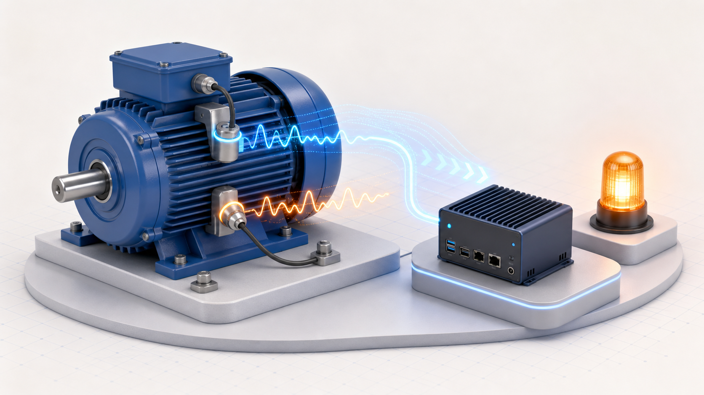
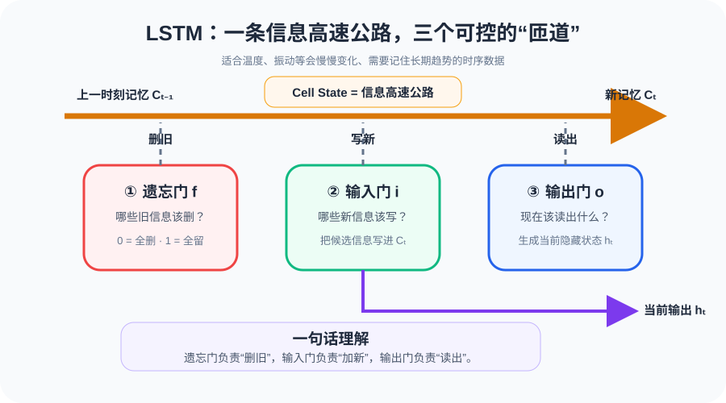
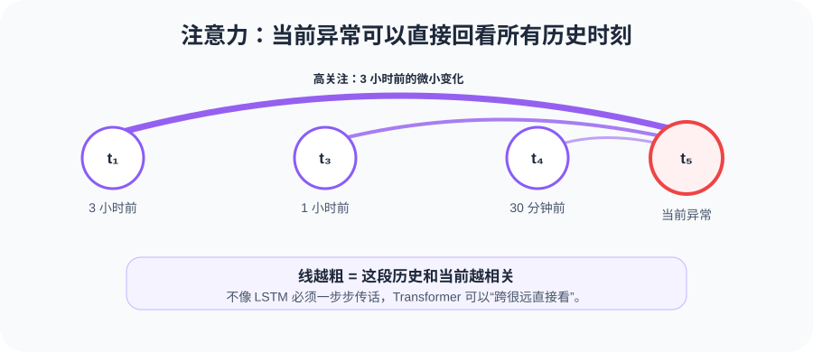
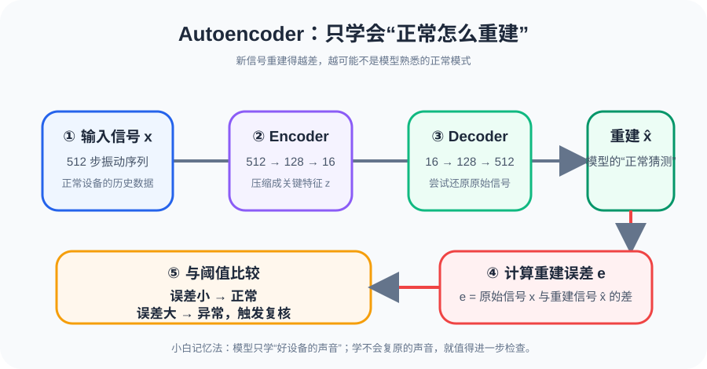
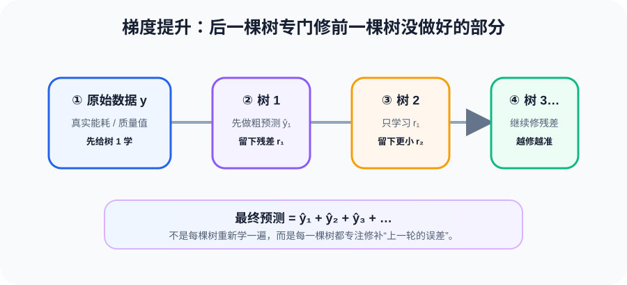
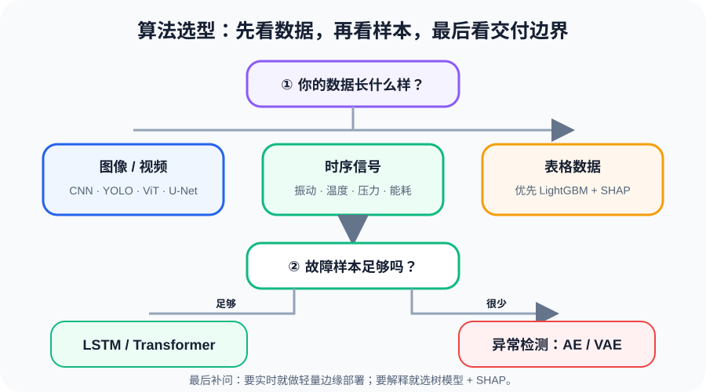

上一篇我们学了视觉模型，处理的是图片。但工厂里 80% 的数据不是图片——它们是随时间变化的信号，或是一行行的属性表格。

先建立直觉：传感器把设备的“声音”和“体温”变成时间序列；模型再从变化趋势中找出早期预警。
工厂里最常见的三种数据形态：
图 1：工厂三种数据形态 —— 图像是空间关系，时序是时间关系，表格是属性关系，三种数据三种思路
💡 核心直觉
图片是空间关系（邻居像素组成边缘），时序是时间关系（前100步影响第101步），表格是属性关系（温度>28 + 峰段 → 电耗高）。三种关系，三种完全不同的AI思路。
前馈网络有一个致命缺点：没有记忆。每个输入独立处理，跟之前看过什么没关系。
打个比方：你看连续剧，忘了上一集就看不懂这集。振动信号也是如此 —— 第100步的异常，可能跟第1~99步的缓慢变化都有关系。
RNN（循环神经网络）的解决方案很简单：把上一步的输出，当作这一步的额外输入。这样网络就"记住"了之前的信息。
图 2：RNN 展开图 —— 同一个单元在不同时间步重复使用，隐藏状态 h 从左到右传递信息
图 3：单个 RNN 单元内部 —— 把上一步记忆 hₜ₋₁ 和当前输入 xₜ 合并，经过 tanh 激活，输出新的记忆 hₜ
🏭 工厂实例
振动信号第100步的异常，跟第1~99步都有关。RNN 的隐藏状态 h 就是"之前所有步的压缩摘要"，每一步都在更新这个摘要。
⚠️ RNN 的致命问题
梯度消失：信息传递的步数越多，早期信息衰减越严重，就像传话游戏 —— "记不住太久以前的事"。这就是为什么我们需要 LSTM。
LSTM（长短期记忆网络）是 RNN 的升级版，核心改进：加了三个门，让你能选择性地"遗忘旧信息、写入新信息、输出需要的信息"。
类比复习考试：
- 遗忘门 = 扔掉过时的笔记（上次考的章这次不考了）
- 输入门 = 记下新的重点（这次新增的考点）
- 输出门 = 答题时翻哪些笔记（这道题需要哪些知识）

图 4：LSTM 单元 —— Cell State 是信息高速公路，三个门控制"删旧/加新/读出"
🏭 为什么适合振动信号？
轴承磨损是一个慢过程——前1000步的缓慢变化，影响着第1001步的状态。LSTM 的 Cell State 能让长期信息几乎无损地传递下去，遗忘门只在"确定过时"时才删除。
"信息高速公路，遗忘门和输入门只是匝道口" —— 这就是 LSTM 能记住远距离依赖的原因。
RNN/LSTM 按顺序一步步处理，太慢，而且信息要"传话"式一路传下去。Transformer 说：我不用传话，每个时间步直接看所有其他步，算"谁跟我最相关"。
Query-Key-Value：图书馆找书
注意力机制的精髓，就是图书馆找书：
图 5：Query-Key-Value 类比 —— Q=你要什么，K=每本书的标签，V=书的内容。注意力分数决定读哪本
注意力箭头：谁跟谁最相关

图 6：注意力机制 —— 每个时间步直接看所有其他步，箭头粗细表示相关程度
多头注意力：不只用一组 QKV，而是同时用多组。"多头 = 多角度"——一个头看短期变化，一个头看长期趋势，一个头看周期模式，最后合在一起。
🏭 为什么比 LSTM 更强？
振动信号当前异常，可能跟3小时前微变最相关——LSTM 需要一步步传过去（可能传丢了），而注意力的箭头直接飞过去，一步到位。
工厂最大的痛点：故障样本太少。轴承坏了才几个样本？而且每种故障都不一样。怎么办？—— 只用正常数据训练。
思路很简单：让模型学会"正常长什么样"。一旦来了一个"重构不回去"的样本，那就是异常。

图 7：Autoencoder 异常检测 —— Encoder 压缩→Decoder 重建→误差超过阈值=异常
VAE：不只是压缩，还要"理解分布"
普通 Autoencoder 把输入压缩成一个点 z。VAE 更进一步：让 z 输出 μ（均值）和 σ（标准差），然后从 N(μ, σ²) 中采样，再加上 KL 正则化，确保学到的隐空间是连续、平滑的。
图 8：VAE 瓶颈 —— Encoder 输出 μ 和 σ，采样 z = μ + σ·ε，KL 正则化确保隐空间平滑
💡 核心优势
重构误差曲线 = 异常评分曲线。连续信号 → 连续评分，不需要标注异常样本。工厂里90%的异常检测场景，都是用这种"只用正常数据训练"的思路。
不是所有问题都需要深度学习。如果你面对的是"设备ID + 排班 + 温度 + 电耗 + 产品规格"这样的表格数据，树模型往往是最优选择。
决策树：连续的是/否问题
图 9：决策树预测电耗 —— 每个节点问一个属性问题，沿着答案走到叶子得到预测值
随机森林：多棵树投票
图 10：随机森林 —— 多棵独立决策树，每棵用不同的随机特征子集，最终取平均
梯度提升（LightGBM）：树1学数据，树2学残差，树3再学残差...

图 11：梯度提升 —— 树1学数据，树2学残差，树3再学残差...逐步逼近真实值
🏭 为什么工厂爱 LightGBM？
可解释！厂长问"为什么预测5万度"，你说："因为温度>28°C、峰段用电、3条产线在跑"——决策路径清清楚楚。feature_importance = 各特征分裂增益之和，直接告诉你哪个因素最重要。
现实中，预测往往需要同时用时序数据和表格数据。TFT（Temporal Fusion Transformer）就是为此而生：三种输入、Variable Selection、LSTM编码+注意力解码、分位数输出。
三种输入
图 12：TFT 架构 —— 三种输入 → Variable Selection → LSTM 编解码 + 注意力 → 分位数输出
💡 TFT 的核心价值
分位数输出不只是告诉你"明天4.6万度"，还告诉"P10=4.2, P90=5.1"——"90%概率在4.2~5.1万度之间"。这对工厂排程太重要了。
三重可解释性：变量权重（电价比温度重要）、注意力权重（昨天下午3点最相关）、预测区间（确定性有多高）——厂长能理解的AI。
学了这么多模型，什么时候用哪个？这张决策树帮你快速定位：

图 13：模型选择决策树 —— 根据数据类型、样本量、可解释性需求、实时性需求快速定位
| 模型 |
擅长数据 |
可解释性 |
工业典型场景 |
| RNN / LSTM |
时序信号 |
弱 |
振动异常检测、温度趋势预测 |
| Transformer |
长时序 |
中（注意力可视化） |
长周期依赖分析、多变量关联 |
| Autoencoder / VAE |
时序（无标签） |
弱 |
故障样本极少时的异常检测 |
| LightGBM |
表格 |
强 |
能耗预测、排程优化、质检分类 |
| TFT |
时序+表格混合 |
强（三重） |
用电量预测、需求规划 |